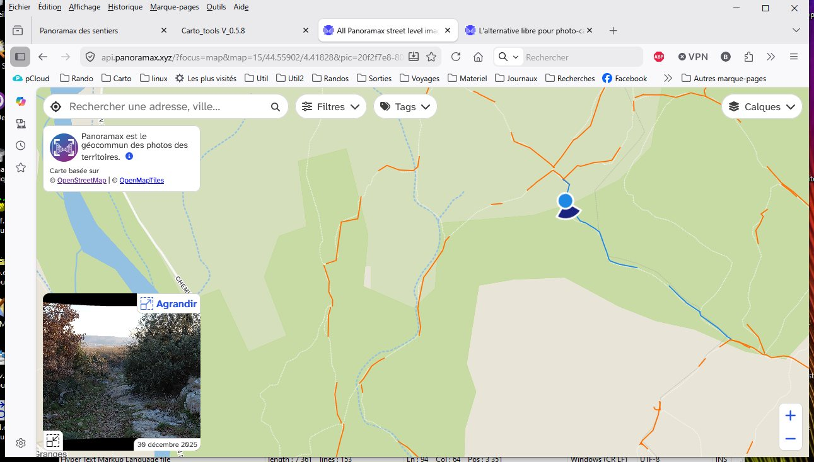
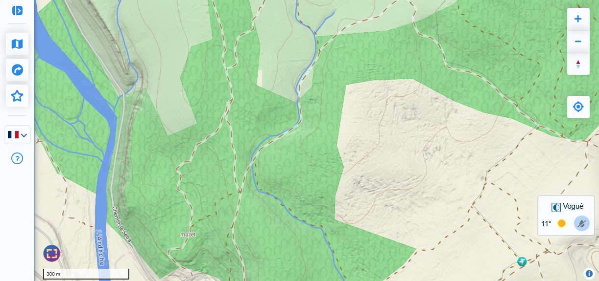
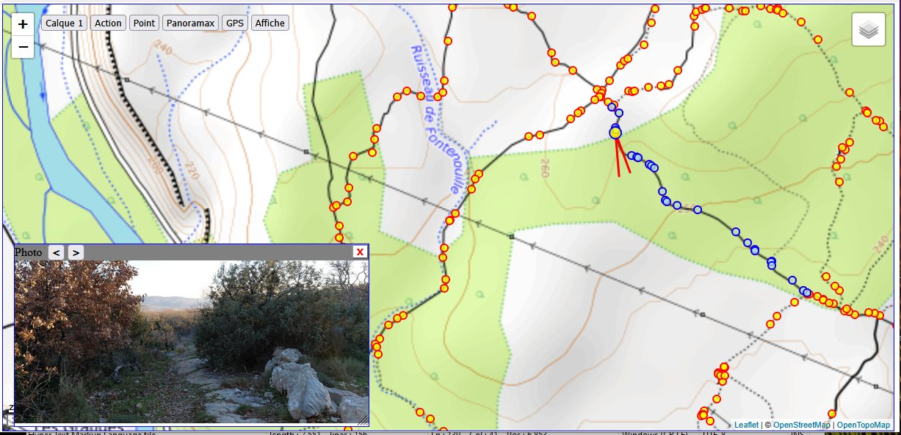
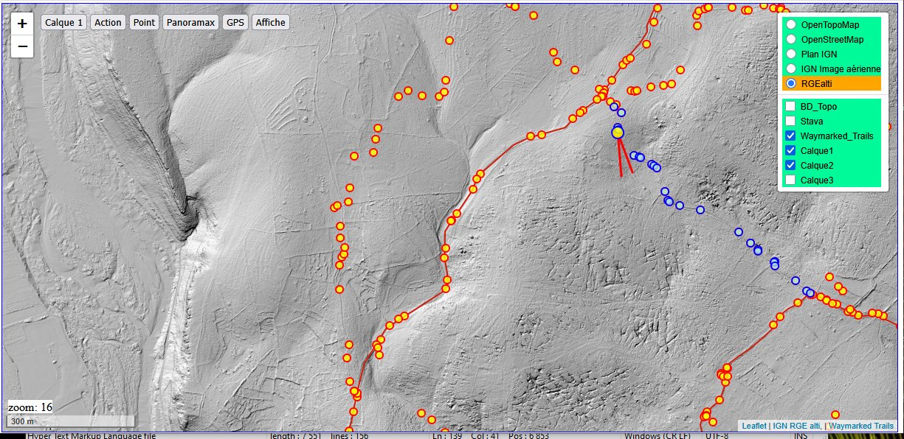
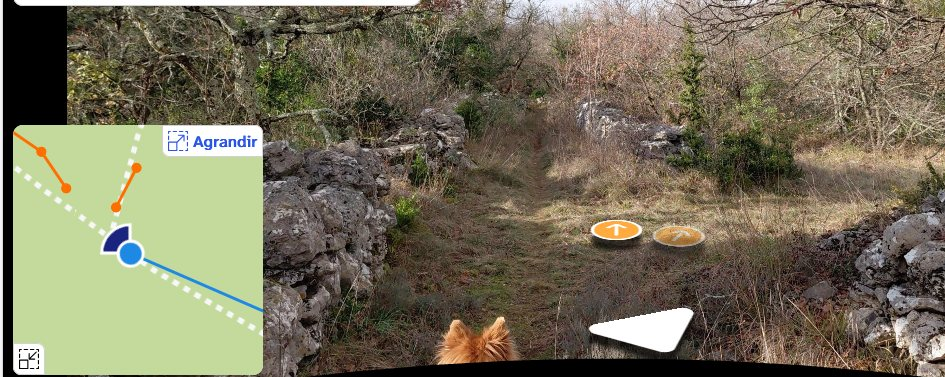

Quand on regarde Panoramax, en dehors des agglomérations et des routes, dans la plupart des régions c'est le grand désert.
Pour les randonneurs, ce serait bien de pouvoir utiliser Panoramax comme le StreetView des sentiers.
Quand on veut planifier une sortie dans un endroit qu'on ne connait pas, on aimerait avoir un aperçu de quelques chemins pour voir ce qui parait intéressant, ce qui semble facile ou difficile.
Malheureusement, à part un petit nombre de passionnés, peu de contributeurs se baladent, à pied ou à vélo avec une caméra 360° en prenant une vue tous les quelques mètres. La couverture des chemins dans une région donnée avance donc très lentement ou, la plupart du temps, pas du tout. D'où, deux questions :
- Comment avoir plus de contributeurs ?
- La couverture continue avec des vues à 360° est-elle indispensable pour les sentiers ?
Beaucoup de randonneurs se baladent maintenant avec un smartphone et une application quelconque de cartographie, la plupart du temps avec un suivi gps.
Avec ce matériel, lors d'une randonnée ordinaire, on peut caractériser les sentiers avec quelques dizaines de photos prises en cours de route et envoyer les résultats sur Panoramax le soir en rentrant.
Pour cela, l'application Baba offre une solution simple, à la portée de tout le monde.
Je n'ai pas trouvé de mode d'emploi de l'application Baba mais, dans l'ensemble on peut s'en passer. L'utilisation des trois fenêtres principales liste, carte et photo est très intuitive.
Il y a seulement quelques points qui ne sautent pas aux yeux pour un novice et que je n'avais pas repéré tout de suite :
A la création du compte, après avoir rempli le token en suivant les indications (très claires), il faut deviner qu'il faut cliquer sur l'icône disquette en haut à droite pour enregistrer et passer à la suite.
Dans le mode photo, il faut savoir que l'icône en bas à droite (pile de carte avec un plus) sert à terminer la séquence en cours pour en démarrer une nouvelle. L'icône en bas à gauche indique si une séquence est en cours et le nombre de photos qu'elle contient.
Le format "Full" dans le mode photo est le format le plus allongé horizontalement. Pour la plupart des chemins c'est la meilleure vision en mettant l'appareil en position paysage. Contrairement à l'intuition, ce n'est pas le format qui conserve le plus de pixels, l'allongement est obtenu en réduisant la hauteur.
Formats : Full = 4080x1884; 16/9 = 4080x2296; 4/3 = 4080x3060 .
Dans les paramètres on a le choix de conserver les photos ou de les effacer après l'envoi dans Panoramax. Il vaut mieux les conserver tant qu'on n'est pas sûr que tout s'est bien passé pour la réception. Les photos sont stockées dans le répertoire pictures/baba, on peut toujours les effacer après.
Note : Ces points concernent la version que j'ai utilisée (1.19). Ils n'ont pas changé dans la version suivante (1.20) mais celle-ci a introduit de nouvelles icônes et de nouvelles fonctionnalités que je n'ai pas fini d'explorer.
Panoramax est une fédération d'instances indépendantes. Les photos publiques de toutes les instances sont réunies dans un métacatalogue et peuvent être vues sur les visionneuses générales : api.panoramax.xyz/
ou
explore.panoramax.fr/.
Comme OpenStreetMap, Panoramax est avant tout une base de données. Le fond de carte pour la visualisation des photos est donc très simple, l'implémentation de cartes plus évoluées étant laissée aux utilisateurs.

Cartes.app a commmencé à intégrer les photos Panoramax mais pour l'instant seules les photos 360° apparaissent sur le fond de carte. Ce filtrage trop rigoureux devrait être relaché dans l'avenir.

On peut espérer que d'autres implémentations paraitront dans l'avenir.
Pour mon usage, j'ai ajouté une visualisation simplifiée de Panoramax dans la page web que j'utilise pour préparer mes sorties. Cette page me permet de jongler entre différents fonds de carte et calques superposés (voir ci-dessous). Elle est au stade expérimental et le restera sans doute mais ellle donnera peut être des idées à d'autres développeurs. Elle peut être testée ici


Après quelques mois d'utilisation de baba et d'aller-retours entre l'acquisition et la visualisation, j'ai dégagé quelques idées de base sur la façon d'organiser les prises de vue pour avoir un résultat clair et agréable à suivre.
J'ai mis en pratique ces idées sur des sentiers en Ardèche sud. Je vous invite à explorer cette région sur Panoramax pour illustrer les conseils qui suivent.
J'ai commencé sur OpenStreetMap par la cartographie des réseaux de sentiers. Ces réseaux permettaient au randonneur de construire un itinéraire personnalisé. Ils sont malheureusement de plus en plus abandonnés et remplacés par des boucles prédéfinies.
Pour les photos sur Panoramax, j'ai gardé le principe du réseau : une séquence = un sentier entre deux intersections.
Ce découpage en séquences courtes a aussi l'avantage de faciliter les mises à jour. Lorsqu'une portion de sentier est dégradée ou devient interdite pour une raison quelconque il suffit du supprimer la séquence sans toucher au reste.

Pour tous les points de prise de vue, la précision de la localisation est correcte à quelques mètres près, précision bien suffisante pour les sentiers.
Je dois préciser cependant que dans mes sorties, j'enregistre systématiquement en parallèle une trace gpx avec Osmand (ou n'importe quelle appli de rando). La position gps est donc interrogée à intervalles réguliers ce qui améliore peut-être la localisation.
En plus des deux points déjà mentionnés: la simplicité et l'absence de matériel spécial, cette façon de contribuer à Panoramax présente d'autres petits avantages: